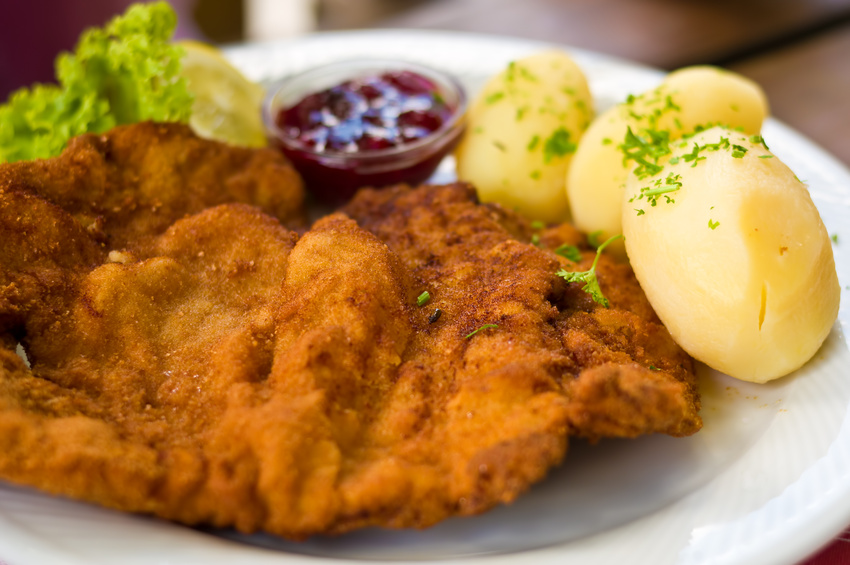

Wiener Schnitzel

Introduction
The Wiener Schnitzel's literally translate from German is the Viennese cutlet. This dish originates from Vienna, Austria. It has a rich history and is the national dish of Vienna, Austria, while being also very popular in Germany. This dish is said to have been invented in around 19th century, during the Prussia & Austrian Habsburg monarchy. (The yellow-black flag and the eagle are their symbols) This dish was only to be made in the Emporer's palace, and later became well-known among people. It is delightful, delicate, thin and crispy. It is golden-colored since it should be deep-fried traditionally with butter. This is basically a piece of thinnened pork, dipped with sauce and bread crumbs, and then fried. It is often served with boiled potatoes (or fried), sour cream, and lemon.
Ingredients
- 5 ounce veal cutlets
- 1/4 all-purpose
- 2 large eggs, well beaten
- Cheese & milk
- Bread crumbs
- Seasonings (Salt, pepper, parsley...)
- Lemon
- Oil or lard for frying
- Butter
Instructions
- Place the veal cutlet on a cutting board and place a large sheet of plastic wrap upon. Use a hammer (for meat) and pound the meat to about 1/4 inch thick.
- Prepare 3 bowls. Mix 1/4 cup all-purpose flour and 1/2 teaspoon kosher salt in the first dish, 2 large beaten eggs in the second dish, and 1/2 cup breadcrumbs in the third dish.
- In a large skillet, heat at least 1/4-inch of oil to 350 F. This takes about 8 minutes, and the oil will just start to shimmer and smoke a bit.
- Working one at a time, dredge the cutlets first in flour until the surface is completely dry.
- Dip in egg to coat, allow the excess to drip off for a few seconds. Then roll quickly in the breadcrumbs till coated.
- Place the meat in the pan, fry about 1-2 minutes on each side until turns golden-brown.
- Take them out and use napkins to dry the excess oil on them.
- Done!! Enjoy your Wiener Schnitzel!!!